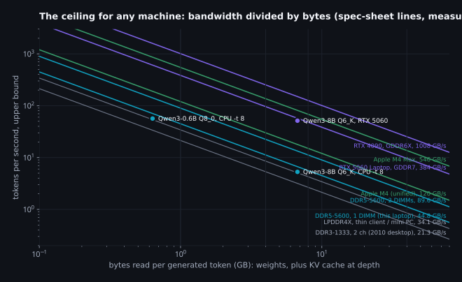
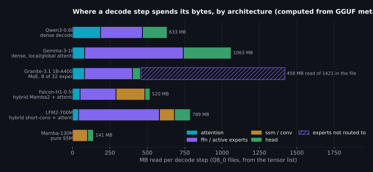
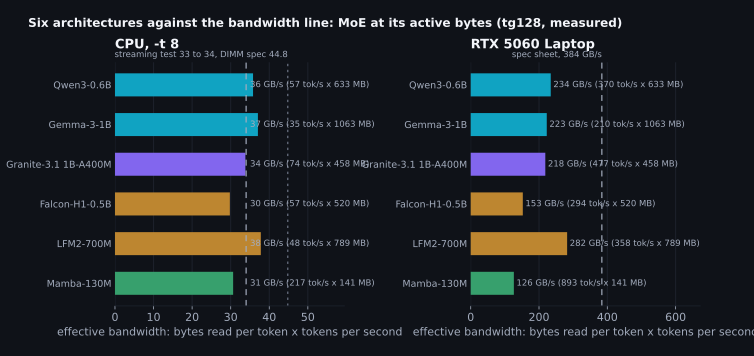
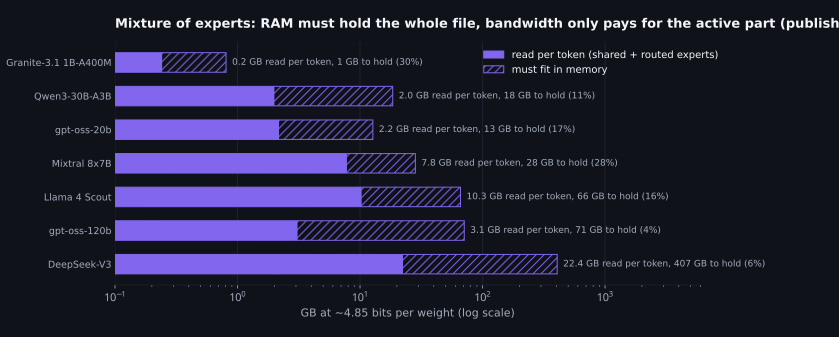
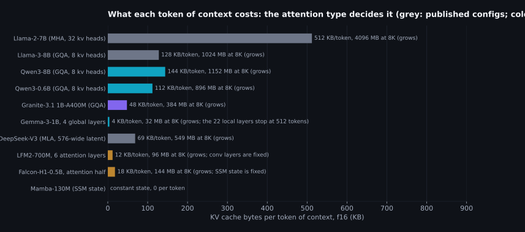
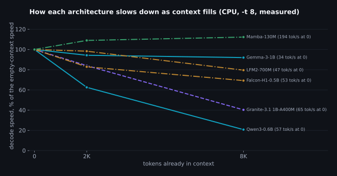
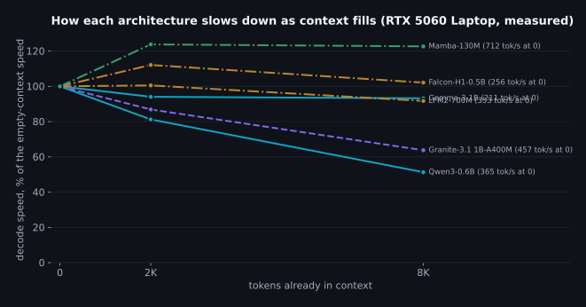
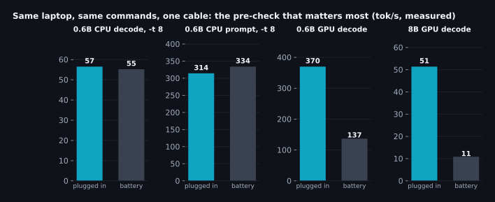
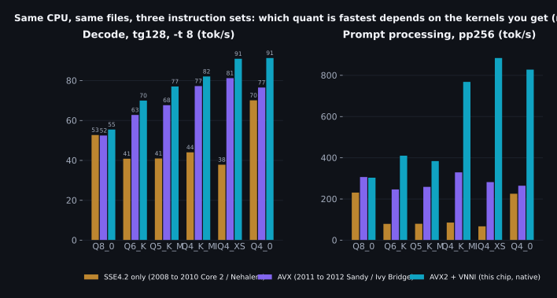
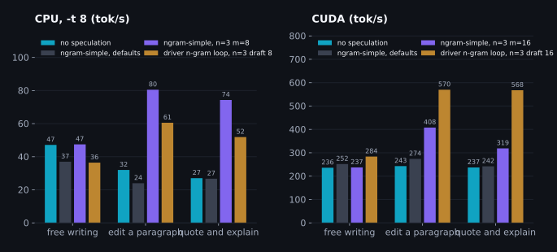

Before you tune anything: a field guide to inference speed and accuracy on the hardware you actually have
What people asked after the first post
The first post took one small model and one laptop and measured every knob llama.cpp has. The questions it left me with are the same ones I get at work, in different clothes. "Our model is a mixture of experts, does the head trick still apply?" "We ship on a thin client with no AVX2, which of those numbers survive?" "Does any of this hold for an embedding model, or for Whisper?" "It's a Mac, is the GPU chapter useless?" Fair questions. The first post was honest about being one machine and one model, and one machine and one model is exactly what nobody else has.
So this is the second half. It's not another benchmark dump. It's the part I should have written first, the part the first post's closing section only gestured at: what actually carries over from one machine to another, what changes when the model has a different shape inside, and what order to try things in when you sit down at a box you've never tuned. I did go back to the bench for it, because the honest way to say "this generalizes" is to try it on models that are built differently and see. Six small models of six architectures went through the same three tests on the CPU and the GPU. Where I measured, I say measured. Where I computed from a file's metadata, I say computed. Where I'm repeating something other people have reported and I haven't checked, I say that too, and you should treat it as a thing to test, not a thing to trust.
The flow is deliberate. Each section ends on the question the next one answers, because that's how the work actually goes: you learn the ceiling, then you ask why you're under it, then you ask what it costs to move, then you ask whether the machine is even what you think it is. Read it straight through once, then keep it open as a checklist.
| Section | The question it answers |
|---|---|
| One number that transfers | What can I predict about a machine I haven't touched? |
| What's inside the file decides the bytes | How do dense, MoE, hybrid, SSM, encoder-decoder and encoder-only models change that prediction? |
| Context is bytes too | Why does the same model get slower as the conversation grows, and by how much per architecture? |
| Accuracy: measure it in ten minutes | Fewer bytes is faster; how do I know what it cost, on my model, without a day of compute? |
| Pre-checks | Is this machine actually the machine I think it is? (Mine wasn't, twice.) |
| The order of things to try | Given the device class, what do I try first, second, third, and what do I skip? |
| Past the ceiling | When is speculative decoding worth it, by workload and by device? |
| When to write code | When do custom kernels, layers or drivers pay, and how do I tell before writing them? |
| A protocol for a new box | How do I do all of this in an hour and write it down so it's still useful next month? |
Everything here was produced by scripts in the same
companion repository
as the first post: zoo.sh for the architecture runs, zoo_meta.py
for the file metadata, precheck.py for the machine checks, charts2.py
for the figures. The build is the same prebuilt llama.cpp b10941 as before, no compiler.
One number that transfers
Almost nothing from a benchmark transfers between machines. Tokens per second doesn't. The best thread count doesn't. The right quant doesn't. What transfers is a division: the memory bandwidth of the device the weights live on, divided by the bytes that have to be read to produce one token. Generating a token with a dense model means reading every weight once, so for a 633 MB file on a laptop whose single DDR5 stick can deliver 44.8 GB/s in theory, nothing can exceed 70 tokens per second, and in practice the first post found the honest ceiling was between 34 and 44.8 GB/s worth of reads. Every CPU result in that post was a story about getting closer to that line. The line itself is the only thing that carries over.
Here is what that division looks like for hardware people actually own. The lines are spec sheets. The dots are measured on my laptop, and each sits under the line for its device.

Read it once and you can already answer most of the questions people ask. A 4 GB model on a 2010 desktop with dual-channel DDR3 tops out around 5 tokens per second, and no flag will change that. The same file on an Apple laptop with unified memory at 120 GB/s tops out at 30. On a discrete GPU at 384 GB/s it's 96, and on a 4090 it's 250. A second DIMM in my laptop would move my line up by exactly 2x, which is more than every flag in the first post combined. That's the first thing to know about a new machine: not its CPU model, not its core count, but how many bytes per second it can pull from wherever the weights sit.
The theoretical number is easy: memory speed in MT/s times bus width in bytes times channels. The achievable number needs a measurement, and it's worth taking two. The first is a plain streaming read: several processes each summing a private buffer, started together, aggregate bytes over wall time. On my laptop that gives 32.7 GB/s, 73% of theoretical. The second is llama.cpp itself decoding a small dense model, with the file size multiplied by tokens per second. That gives 33.7 GB/s here, a little higher, because ggml's kernels are better at keeping the memory controller busy than a numpy sum. Plan with the second one. The streaming test is a floor, and a useful one, because if llama.cpp comes in well below it you know the problem is in the software setup and not the hardware.
# 1. what the DIMMs promise (Windows; on Linux use dmidecode -t memory, on macOS system_profiler SPMemoryDataType)
powershell "Get-CimInstance Win32_PhysicalMemory | Select Capacity, ConfiguredClockSpeed, DataWidth"
# theoretical GB/s = MT/s x (DataWidth / 8) x number of DIMMs / 1000
# 2. what llama.cpp actually pulls: a small dense model, decode only, threads = physical P-cores
llama-bench -m Qwen3-0.6B-Q8_0.gguf -p 0 -n 64 -r 3 -t 8 -o jsonl
# effective GB/s = model_size x avg_ts / 1e9. This is your line.
# 3. the ceiling for any file you're considering
# tok/s <= effective GB/s / (bytes read per token)Bandwidth is the numerator and it's a property of the machine. The denominator, bytes read per token, is a property of the model, and it's where the "but my model is different" questions live. For a dense decoder it's the file size, near enough. For anything else it isn't, and the difference is the whole next section. So: how many bytes does your model actually read to produce one token?
What's inside the file decides the bytes
A GGUF file is a list of tensors with names, shapes and types, and the names tell you what a
decode step will touch. I wrote a small script, zoo_meta.py, that reads that list
for a model and adds up the bytes by role: attention projections, feed-forward weights, expert
weights, state-space or convolution weights, the output head. Then it works out which of those
a single token actually reads. For a dense model that's everything. For a mixture of experts
it's everything except the experts the router didn't pick. Here's what six small models of six
different architectures look like through that lens, all at Q8_0 so the bytes are comparable.

Then I ran the same three tests on every one of them: decode at 128 tokens, prompt processing at 512, and decode again at 2K and 8K tokens of context, on the CPU with eight threads and on the GPU with everything offloaded. The table has the file size, the bytes one token actually reads, and the speed on both devices. The last column of each device pair is the one to look at: bytes read times tokens per second, which is the bandwidth the model effectively used.
| Model | Architecture | MB in file | MB read / token | KV KB / token (f16) | CPU tg128, -t 8 | CPU GB/s used | CPU pp512 | RTX 5060 tg128 | GPU GB/s used |
|---|---|---|---|---|---|---|---|---|---|
| Qwen3-0.6B | dense decoder, GQA, tied head | 633 | 633 | 112 | 56.5 ± 0.2 | 36 | 314 ± 4 | 370 ± 2 | 234 |
| Gemma-3-1B | dense, 5 local : 1 global attention, tied head | 1063 | 1063 | 26 | 34.9 ± 0.2 | 37 | 204 ± 2 | 210 ± 1 | 223 |
| Granite-3.1 1B-A400M | MoE, 8 of 32 experts per token | 1421 | 458 | 48 | 73.8 ± 1.7 | 34 | 454 ± 3 | 477 ± 3 | 218 |
| Falcon-H1-0.5B | hybrid, Mamba2 and attention in every layer | 555 | 520 | 18 | 57.3 ± 0.7 | 30 | 438 ± 11 | 294 ± 3 | 153 |
| LFM2-700M | hybrid, 10 short-conv + 6 attention layers | 789 | 789 | 12 | 47.9 ± 0.5 | 38 | 412 ± 18 | 358 ± 3 | 282 |
| Mamba-130M | pure SSM, no attention | 141 | 141 | state only | 216.6 ± 2.6 | 31 | 804 ± 13 | 893 ± 14 | 126 |

Two findings, and they're the reason the first post's CPU story transfers. First, on the CPU the bandwidth line holds across architectures as long as you count the bytes correctly. The dense Qwen3 pulls 36 GB/s, Gemma-3 with its local and global attention 37, the Granite MoE 34 when you count only the experts it routes to, and LFM2 with its convolution layers 38. Those are the same number within noise, and they're the same number the first post found for Qwen3 alone. The two models with a Mamba-style state-space scan come in lower, Falcon-H1 at 30 and Mamba-130M at 31, because a scan does arithmetic per token that isn't a weight read, so some of the step's time is spent on compute that the bandwidth model doesn't see. Not a lot, but consistently. Second, on the GPU none of them get near the line. The best is LFM2 at 74% of 384 GB/s and the worst is Mamba at 33%, and the ordering has nothing to do with bytes; it's the number and shape of kernel launches per step. That's the first post's "small models can't use a big GPU" result, now shown to hold for MoE and hybrids too. If your model is under a couple of billion parameters, the GPU chapter of the first post applies to it whatever its architecture, and quantizing below Q8_0 will not make it faster.
One caveat on the prompt-processing column. Those are single runs on a shared laptop and prompt processing is the measurement most sensitive to background load, so treat the spread between architectures there as indicative. The decode numbers were stable to within a couple of percent across repeats; the prompt numbers were not.
Now the architectures one at a time, with what the bytes model says to try first for each. I've kept these short on purpose. The point isn't to explain every architecture; it's to tell you which of the first post's levers still exist for it and which don't.
Dense decoders: Llama, Qwen, Mistral, Gemma, Phi
The default case and the one the first post covered. Bytes per token equals the file minus the input embedding row lookup, which for a model with a separate output head means the whole file minus the embedding table, and for a model with a tied head means the whole file. The levers are all there: thread count equals P-cores, the quant chosen by the accuracy table, the head quantized separately if it's a large share of the bytes, the KV cache quantized at depth, self-speculation on repetitive workloads. The one thing that changes between dense models is how big a share the head is, and that follows the vocabulary and the hidden size, not the parameter count.
| Model | Vocabulary | Hidden size | Head | Head MB | Share of bytes read per token |
|---|---|---|---|---|---|
| Gemma-3-1B | 262,144 | 1152 | tied | 321 | 30% |
| Mamba-130M | 50,280 | 768 | tied | 41 | 29% |
| Qwen3-0.6B | 151,936 | 1024 | tied | 165 | 26% |
| LFM2-700M | 65,536 | 1536 | tied | 107 | 14% |
| Granite-3.1 1B-A400M | 49,155 | 1024 | tied | 53 | 12% |
| Qwen3-8B | 151,936 | 4096 | separate | 511 | 8% |
| Falcon-H1-0.5B | 32,784 | 1024 | separate | 36 | 7% |
Gemma-3-1B has a 262K-entry vocabulary and its head is 30% of every token's bytes, more than Qwen3-0.6B's 26%. Qwen3-8B, with the same 152K vocabulary as its small sibling but a much bigger body, is at 8%. Falcon-H1-0.5B has a 33K vocabulary and the head is 7%. Mamba-130M has a modest 50K vocabulary and still comes in at 29%, because its body is tiny. The exact rule is vocabulary times hidden size against the size of the body, and the tensor list gives you all three. So the first post's result, that quantizing only the head to Q6_K buys 6% fewer bytes at a KL divergence you can't distinguish from noise, transfers by vocabulary size. On a Gemma it's worth more. On an 8B it's worth a couple of percent and you should spend your attention elsewhere. The rule: read the head's share off the tensor list before deciding whether the head is a lever.
Mixture of experts: Mixtral, Qwen3-30B-A3B, gpt-oss, DeepSeek, Granite MoE
The architecture where "file size" lies to you most. Every token goes through the shared parts of every layer and then through a handful of the experts, chosen by a router. Granite 3.1 1B-A400M has 32 experts per layer and uses 8, so a token reads 458 MB out of a 1421 MB file, and it decodes at 74 tok/s on my CPU, faster than the 633 MB dense Qwen3 at 57, while taking more than twice the RAM. That's the deal MoE offers: speed follows the active bytes, memory follows the total. Here's what that looks like for the MoE models people actually run, at a Q4_K_M-class 4.85 bits per weight (the gpt-oss files ship in MXFP4 and are a little smaller than this).

What to try first on a MoE, in order. One: check that the whole file fits in RAM with
headroom, because if experts have to page from disk the bandwidth line becomes the disk's
line and everything is ten times slower. Two: on a machine with a GPU that's too small for
the whole file, put the experts on the CPU and everything else on the GPU. llama.cpp has this
as a single flag, --n-cpu-moe N in the server and CLI, or
-ot "ffn_.*_exps=CPU" in llama-bench, and it works for the same reason the FFN
offload in the first post worked: attention, norms and the KV cache stay on the fast device,
and only the big, sparsely used matrices go to the slow one. Three: quantize the experts
harder than the shared layers. This is widely reported to cost less accuracy than quantizing
a dense model the same amount, and it's plausible, since each expert sees a fraction of the
tokens; I haven't measured it and you should, with the ten-minute test further down, before
you ship it. Four: be careful with speculative decoding on MoE. Verifying eight drafted tokens
in one batch can route to eight different sets of experts, so the "free" verification step
reads more bytes than a single-token step would. Again, measure.
Local and global attention: Gemma 3, Mistral's sliding window, Llama 4
Gemma-3-1B alternates five layers of attention that only look back 512 tokens with one that
looks at everything. At empty context it behaves like a dense model, 37 GB/s on
the CPU, right on the line. The difference shows up as the context fills, and it's the whole
of the next section. What to try first: nothing special at short context; at long context,
nothing at all, because the cache growth you'd normally fight is mostly already capped. The
lever you lose is -ctk q8_0 mattering much, because the cache is small to begin
with.
State-space and hybrid: Mamba, Falcon-H1, LFM2, Granite 4, Jamba, Nemotron-H
These replace some or all attention layers with a recurrent state that has a fixed size per layer. Mamba-130M has no attention at all. Falcon-H1 runs a Mamba2 block and an attention block side by side in every layer. LFM2 uses short convolutions in ten of sixteen layers and attention in six. Their weight bytes behave like everyone else's, as the table shows, with the small tax on the scan noted above. What changes is the state: it doesn't grow with context, so the "KV cache" for the recurrent layers is a constant, and only the attention layers, if any, pay per token. What to try first: threads and quant as for dense, then check the long-context behaviour in the next section, because that's where these earn their keep. What you lose is prompt-lookup speculation in the form the first post used; llama.cpp's KV rollback for a rejected draft works on attention caches, and recurrent state has to be checkpointed and restored instead, which the server does support for some of these but which you should verify works and helps before relying on it. Also, on the GPU, Mamba-130M was the most launch-bound model in the zoo at 33% of the line: the scan is many small kernels.
Encoder-decoder: T5, Whisper, NLLB, BART
A different shape entirely. The encoder reads the input once, as a batch, which is a
prompt-processing-shaped job: compute-bound, happy with large batches, indifferent to weight
bytes. Then the decoder generates tokens one at a time, reading its own weights and a
cross-attention cache that was computed once from the encoder output and never grows. So the
per-token bytes are the decoder's weights plus the decoder's self-attention cache, and the
encoder's cost is a fixed price per request. llama-bench can't run these at all;
it asserts because it never calls llama_encode. llama-completion
can. flan-t5-small at Q8_0 is a 113 MB file of which the decoder step reads about
80 MB, and it decoded at 345 to 369 tok/s on the CPU across
three runs, which is 29 GB/s, on the line. On the GPU it did 300 to
397, the same, because a model this small is launch-bound there. The perf print
doesn't time the encoder separately; total minus decode puts the encoder plus overhead under
20 ms for a 28-token input. What to try first: the decoder is where the tokens are, so the
dense levers apply to it, and the encoder wants batch, so if you're running many requests,
batch the encoder side. For Whisper specifically, the audio encoder dominates and the GPU
helps it far more than it helps a text decoder of the same size.
Encoder-only: embeddings, rerankers, classifiers
No decode at all. One forward pass over the whole input and you're done, which means the entire job is prompt-processing-shaped and the bandwidth line is nearly irrelevant. Here's nomic-embed-text-v1.5 at Q8_0, 145 MB, embedding 128 and 512 token inputs.
| Device | Tokens per input | Tokens per second |
|---|---|---|
| CPU, -t 4 | 128 | 1258 ± 4 |
| CPU, -t 4 | 512 | 1167 ± 16 |
| CPU, -t 8 | 128 | 2142 ± 39 |
| CPU, -t 8 | 512 | 1606 ± 323 |
| CPU, -t 16 | 128 | 1817 ± 14 |
| CPU, -t 16 | 512 | 1766 ± 11 |
| RTX 5060 | 128 | 48191 ± 11245 |
| RTX 5060 | 512 | 72811 ± 4841 |
Three things to read off that. The CPU peaked at eight threads for the short input (2142 tok/s against 1817 at sixteen and 1258 at four), the same P-core result as the first post, so "encoders can use all the cores" is not something I can claim from this machine; measure it on yours. The GPU is 23 times faster on the short input and 45 times on the long one, not the six or seven times you see on decode, because this is exactly the work a GPU is for. And the quantization choice barely matters for speed on either device, because the weights are read once per batch of tokens, not once per token; pick the quant by accuracy, which for embeddings means checking retrieval quality on your own data, not KL divergence. What to try first: batch size, then the GPU if you have one, then threads. Skip the quant chapter almost entirely.
So the bytes-per-token model survives contact with six architectures, provided you count the bytes the way the model actually reads them: active experts, not all experts; decoder weights, not the whole encoder-decoder file; and for encoders, don't count per token at all. All of that was at empty or short context. The next question is what happens to the bytes when the conversation is eight thousand tokens long, because that's where the architectures stop looking alike.
Context is bytes too
The first post measured the 0.6B slowing down as its context filled and found that a quantized KV cache overtook f16 past 8K tokens on the GPU. Here's the mechanism in bytes. For every layer that has attention, the model stores a key and a value vector for every token it has seen, and reads all of them back on every step. The size per token is two vectors, times the number of key-value heads, times the head dimension, times bytes per element, times the number of attention layers. That last factor is the one architecture controls.

The spread is enormous. A Llama-2-7B with full multi-head attention stores 512 KB per token, 4 GB at 8K context, more than half its own weights at Q4. Grouped-query attention, which every current dense model uses, cuts that four to eight times: Qwen3-8B stores 144 KB per token. The small Qwen3 stores 112 KB, which sounds small until you multiply by 8,192 and get 940 MB, more than the 633 MB of weights. DeepSeek's latent attention compresses the whole thing to a 576-wide vector per layer. Gemma-3's local layers stop growing at 512 tokens, so only its four global layers grow. The hybrids grow only in their attention layers. Mamba doesn't grow at all.
Now the measurement. Every zoo model, decoding 32 tokens after 0, 2K and 8K tokens of context, on both devices, default flags.


| Model | CPU at 0 | CPU at 2K | CPU at 8K | GPU at 0 | GPU at 2K | GPU at 8K |
|---|---|---|---|---|---|---|
| Qwen3-0.6B | 57 | 36 (63%) | 12 (21%) | 365 | 296 (81%) | 187 (51%) |
| Gemma-3-1B | 34 | 32 (94%) | 31 (92%) | 211 | 198 (94%) | 196 (93%) |
| Granite-3.1 1B-A400M | 65 | 55 (84%) | 26 (40%) | 457 | 397 (87%) | 292 (64%) |
| Falcon-H1-0.5B | 53 | 44 (83%) | 37 (69%) | 256 | 287 (112%) | 261 (102%) |
| LFM2-700M | 47 | 46 (98%) | 37 (80%) | 353 | 355 (101%) | 324 (92%) |
| Mamba-130M | 194 | 212 (109%) | 218 (112%) | 712 | 881 (124%) | 873 (123%) |
On the CPU at 8K tokens the dense Qwen3 keeps 21% of its speed. Bytes alone don't predict that: 940 MB of cache on top of 633 MB of weights is 2.5x the traffic, which would leave 40%, so about half the loss is bytes and the other half is the attention arithmetic itself, a dot product against every one of 8,192 positions per head per layer, which on eight cores is no longer free. The Granite MoE keeps 40% against a bytes-only prediction of 54%, the same split. That's also why the fused attention kernel matters more at depth than at zero, which the first post found and which I come back to below. The hybrids keep 69% and 80%. Gemma-3, with only four growing layers, keeps 92%. Mamba is flat, and I'd add that its 2K and 8K points came out slightly above its zero point, which is repeat-to-repeat noise on a two-repetition run and not a sign that recurrent models get faster with context. The GPU shows the same ordering with smaller drops, Qwen3 to 51%, Granite to 64%, Gemma to 93%.
These runs used default flags, which on the CPU means flash attention on. The first post
found that on this CPU the plain attention path is faster at depth than the fused one, and
since half of the loss above is attention compute rather than bytes, the dense CPU number
here is the pessimistic case; with -fa off it would fall less.
I left the defaults on for the zoo so the comparison across architectures was fair, not so
each one was at its best.
What to do with this depends on which kind of model you have. On a dense GQA model, the levers are the ones from the first post: a q8_0 KV cache halves the cache bytes and, past a few thousand tokens, that shows up directly in speed, and on a CPU try flash attention off at depth. On a MoE the same applies, and the cache is a bigger share of the total than the small active-weight footprint suggests. On a sliding-window model there's little to do, and that's the point of the design. On a hybrid or SSM, the growth is small or nil, but the constant state per sequence isn't free either, and if you run many parallel sequences on a server it multiplies by the slot count the same way a cache does. Whatever the model, the arithmetic is the same: weights bytes plus context bytes, divided into the bandwidth. If that sum doesn't fit in the fast device's memory, the first post's Windows chapter applies and the driver will spill silently; the 8B in that post went from 34.0 tok/s at 4K context to 8.7 at 8K for exactly that reason, and a q8_0 cache brought it back to 29.8.
Everything so far has been about reading fewer bytes to go faster: smaller quant, quantized cache, active experts, fewer attention layers. Each one changes what the model computes. The obvious next question is what it costs, and whether you can find out on your own model in less than a day.
Accuracy: measure it in ten minutes
The first post scored twenty-one quantization variants of one model with KL divergence against BF16 over 200 chunks of wikitext-2, and that run took most of a day and 15 GB of stored logits. Nobody is going to do that for every model they consider, and they shouldn't have to. This section is about what that run taught me that transfers, and how to get the part of it you need in about ten minutes.
First, the method, because the choice of metric matters more than people think. Perplexity
on its own is a bad way to compare quantizations: a quant can lower the perplexity on a test
set by accident while making the model's distribution less like the original's. KL
divergence measures the second thing directly. For every token position, it compares the
quantized model's full probability distribution over the vocabulary with the reference
model's, and averages. Zero means identical. It comes with two companions that are easier to
explain to a non-specialist: the fraction of positions where the quant's most likely token
matches the reference's, and the RMS change in the probability the quant assigns to the
token that actually came next. llama.cpp's llama-perplexity produces all three
from one run if you first save the reference model's logits.
What the full run said, briefly, since the numbers are in the first post: Q8_0 is free (KLD 0.0027), Q6_K nearly so (0.0104), Q4_K_M is where you start to notice (0.0741, top-1 agreement 86%), Q3_K_M is a different model (0.2497) and Q2_K on a 0.6B agrees with the reference on the next token barely more than half the time (0.840, 58%). On which tensors are sensitive: quantizing only the head to Q6_K costs nothing (0.0038); to Q4_K it costs about a third of what quantizing the whole body would (0.0221); quantizing the attention projections to Q4_K (0.0411) is about as bad as quantizing the much larger feed-forward weights to Q4_K (0.0521), so per byte saved the attention is the expensive place to cut; and putting a Q8_0 head on a Q4_K_M body (0.0731) recovers a real fraction of the damage for a small cost in bytes.

What transfers, and what doesn't
The shape transfers. Every published KLD table I've read has the same knee between 5 and 4 bits per weight and the same cliff below 3, and mine did too; that's reported plus one measurement, not a law. The absolute numbers don't. A 0.6B model has less redundancy than an 8B and the same quant costs it more; the widely reported rule is that bigger models tolerate lower bits, and the first post's KLD table is consistent with it but doesn't prove it, since it's one model. The per-tensor findings are the ones I'd carry over with the most confidence, because they follow from structure rather than size: the head is a lookup that every token pays for, attention projections are small and sensitive, feed-forward weights are big and forgiving. For a MoE, the reported pattern is that expert weights tolerate lower bits than the shared layers do; it's plausible for the same structural reason and I haven't measured it. For an embedding model, KL divergence over next-token distributions is the wrong tool altogether, since the model doesn't predict tokens; measure retrieval quality on your own queries instead.
Which means the honest answer to "is this quant safe for my model" is always "run the test", and the test needs to be cheap enough that you actually will.
The short recipe
The expensive part of the full run is the base file: 200 chunks, the second 256 tokens of each scored (the first half is context), times a 152K vocabulary of 16-bit logits, is 15.5 GB. The cheap version uses 20 chunks. On my GPU the base took five seconds to produce and each variant scored against it in under four. On a CPU multiply by ten or so. The base file is 1.5 GB.
# reference logits, once per model, from the best file you have (BF16 or F16)
llama-perplexity -m model-BF16.gguf -f wiki.test.raw -c 512 --chunks 20 --kl-divergence-base base-20.kld
# each candidate, a few seconds each; --chunks is taken from the base file from here on
llama-perplexity -m model-Q4_K_M.gguf -f wiki.test.raw -c 512 --kl-divergence-base base-20.kld --kl-divergence
# read: "Mean KLD", "Same top p", "RMS Δp"How much do you give up with 20 chunks instead of 200? I did both. Q4_K_M scored 0.0683 ± 0.0014 on the short base against 0.0741 on the full one, 8% lower. Q8_0 scored 0.0026 ± 0.0000 against 0.0027, 6% lower. The full run's log also prints its running mean after every chunk, so I could see how the estimate settles for the other variants without rerunning anything.
| Variant | After 5 chunks | After 20 | After 40 | After 200 |
|---|---|---|---|---|
| Q8_0 | 0.0024 ± 0.0001 | 0.0026 ± 0.0001 | 0.0025 ± 0.0000 | 0.0027 ± 0.0000 |
| Q8_0 body, Q6_K head | 0.0036 ± 0.0001 | 0.0038 ± 0.0001 | 0.0036 ± 0.0001 | 0.0038 ± 0.0000 |
| Q6_K | 0.0098 ± 0.0004 | 0.0097 ± 0.0002 | 0.0097 ± 0.0001 | 0.0104 ± 0.0001 |
| Q4_K_M | 0.0691 ± 0.0035 | 0.0683 ± 0.0014 | 0.0697 ± 0.0011 | 0.0741 ± 0.0006 |
| Q3_K_M | 0.2222 ± 0.0086 | 0.2401 ± 0.0045 | 0.2385 ± 0.0034 | 0.2497 ± 0.0015 |
The mean drifts up a little as more chunks come in, by 5 to 10%, because the later parts of the test set are harder text. The ranking never changes, and the gaps between variants are ten times larger than the drift. If your question is "which of these three files should I ship", 20 chunks answers it. If your question is "is this 0.0027 or 0.0029", it doesn't, and you probably don't have that question.
Two things to watch. The reference should be the least-quantized file you can get, and if the only file is Q8_0 then you're measuring distance from Q8_0, not from the model, which is fine as long as you say so. And the text should be something like what you'll run: wikitext is a convention, not a law, and a quant that's fine on encyclopedia prose can be worse on code or on a language the model is weaker in. If you have your own prompts, a few hundred lines of them make a better test file than wikitext does.
At this point you know the ceiling for a machine, the bytes for a model, what context adds, and what a quant costs. Before you touch a single flag, there's one more question, and I'd put it first if the logic of the post allowed it: is the machine in front of you actually the machine you think it is?
Pre-checks: is this the machine you think it is?
I want to tell this one as it happened, because it's the most useful thing in the post and I nearly missed it. I started the architecture runs for this piece on the same laptop as before, same binaries, same commands. The CPU numbers came out as expected. The GPU numbers came out at less than half of what the first post reported. Qwen3-0.6B, which had decoded at 303 tok/s the day before, did 137. The 8B did 10.8 instead of 37.5. I checked for other processes on the GPU, checked VRAM, tried different thread counts, changed the Windows power scheme. Nothing. Then I sampled the GPU's clocks during a run and found it pinned at a few hundred megahertz with a power limit of 24 watts against a default of 55. The laptop was on battery.

Plugged in, the limit went to 90 W and the numbers came back: 370 and 51.4 tok/s. The CPU didn't care either way, 56.5 against 55.2 on decode and 314 against 334 on prompt processing, both within the noise of a busy machine, which surprised me; I'd assumed battery would cut CPU turbo too, and on this laptop it didn't measurably. So the bandwidth line held for the CPU on battery and the GPU silently became a different, much slower device. Nothing in llama.cpp's output hints at it. The model loads, every layer reports offloaded, the numbers are just small.
That's the second time this laptop turned out not to be the machine I thought it was. The
first, in the first post, was the single DIMM. And having found two, I wrote the check I
should have run on day one. It's precheck.py in the repository, and this is its
output on this laptop, plugged in, on a quiet-ish morning.
== OS and power
Windows 10 (AMD64)
battery present, on AC: True
Power Scheme GUID: 6fecc5ae-f350-48a5-b669-b472cb895ccf (Turbo)
== CPU
Intel(R) Core(TM) i7-14650HX physical cores=16 logical=24
ISA: sse4_2 avx avx2 fma f16c (py-cpuinfo does not list AVX-VNNI; the kernel DLL below tells you)
ggml-cpu variants in bin/cpu: alderlake, cannonlake, cascadelake, cooperlake, haswell, icelake, ivybridge, piledriver, sandybridge, sapphirerapids, skylakex, sse42, x64, zen4; the loader scores each and keeps the best
== Memory
1 DIMM(s), 16 GB total, 5600 MT/s, 64-bit each: theoretical 44.8 GB/s
free now: 3.9 GB
streaming read, 1 process(es): 15.2 GB/s
streaming read, 4 process(es): 32.7 GB/s
streaming read, 8 process(es): 32.7 GB/s
best is 73% of theoretical; 60 to 80% is normal for this kind of test
decode ceilings at that bandwidth: 633 MB model 52 tok/s, 2 GB 16 tok/s, 4 GB 8.2 tok/s, 8 GB 4.1 tok/s
llama-bench decode on Qwen3-0.6B-Q8_0.gguf with -t 8: 53.2 tok/s = 33.7 GB/s effective bandwidth (this is the figure to plan with; the streaming test above is a floor)
ceilings at 33.7 GB/s: 2 GB model 17 tok/s, 4 GB 8.4, 8 GB 4.2
CPU kernels loaded: ggml-cpu-alderlake.dll (alderlake = AVX2 + AVX-VNNI; haswell = AVX2; sandybridge = AVX only; sse42/x64 = no AVX)
== GPU
NVIDIA GeForce RTX 5060 Laptop GPU, 8151 MiB, 37 MiB, 3090 MHz
power limit now 90.00 W, default 55.00 W
free VRAM: 8114 MiB. Weights + n_ctx x KV bytes/token + ~10% compute must fit; on Windows an overflow spills to system RAM silently.
other CUDA processes:
41160, C:\LeadForge\bin\llama-cuda\llama-server.exe
38192, C:\LeadForge\bin\llama-cuda\llama-server.exe
8968, C:\Users\inbox\AppData\Local\Programs\cursor\Cursor.exe
== Background load
CPU busy now: 9%
== Warnings
- HYBRID CPU: the 16 "physical cores" include E-cores. llama.cpp defaults -t to all of them; set -t to the P-core count and measure.
- SINGLE CHANNEL: one DIMM populated. A second DIMM is the cheapest 2x for decode there is.It takes under a minute, most of which is the bandwidth test and one short llama-bench run. Every line of it is a thing that changed a number in one of these two posts. Here's the same list as a checklist, with why each item matters and what to do about it, for machines that aren't mine.
| Check | Why it matters | What to do |
|---|---|---|
| Power source and GPU power limit | On battery this laptop's GPU ran at 24 of 55 W and decode fell 3 to 5x. Quiet or silent fan profiles do the same on AC. | Plug in. Read nvidia-smi -q -d POWER and compare the current limit with the default. Record it with every result. |
| Memory channels and speed | The single biggest term in the CPU ceiling. One DIMM halves it. | Count DIMMs, read their speed, compute the theoretical GB/s. If a slot is empty, that's the cheapest upgrade you'll find. |
| Measured bandwidth | Achieved is 60 to 80% of theoretical. The gap tells you whether tuning can help. | Run the streaming test and a small llama-bench; use the higher number as your line. |
| Core topology | Hybrid Intel parts default to using E-cores, which cost 5 to 50% on decode depending on load. SMT doesn't add bandwidth. | Find the P-core count. Set -t to it. Measure 4, 6, 8 too; four cores with SMT matched eight without in the first post. |
| Instruction set and CPU kernels | No AVX at all means the sse42 or x64 kernels, where K-quants lose their fast paths and prompt processing is 2 to 3x slower; AVX without AVX2 means the sandybridge kernels, which keep the K-quant ordering. AVX-512 and AMX builds exist but the loader has to pick them. | Run llama-bench with -v and read which ggml-cpu-* library loaded. If it's not the one you expected, that's your first bug. |
| VRAM free, not total | Other processes hold VRAM. Weights plus context cache plus compute must fit, or Windows spills into system RAM without an error and speed falls 4x. | nvidia-smi --query-compute-apps. Do the arithmetic with the KV bytes per token from the chart above and your real context length. |
| Background load | Prompt processing swung 172 to 483 tok/s on this machine in one hour with the same command. | Look at CPU use before a run. Compare settings back to back, never across sessions. Report the load with the number. |
| Operating system | Windows: silent VRAM spill, no E-core exclusion, OpenMP threadpool. Linux: E-cores excluded by default, direct I/O available. macOS: unified memory, so the DIMM line is the GPU line too. | Know which of the first post's chapters apply. The threads chapter is Windows-specific; the bytes model isn't. |
| Model file identity | Two files with the same name can have different tensor counts, tied or separate heads, different quant mixes. The first post found 310 versus 311 tensors across "the same" Qwen3-0.6B. | Read the tensor list. zoo_meta.py prints head share, expert counts and KV bytes per token in one line. |
Reconciling two days of GPU numbers
One consequence of writing the check after the first post rather than before it: the first post's GPU numbers are lower than today's. Yesterday, Qwen3-8B at full offload decoded at 37.5 tok/s and the 0.6B at 303. Today, plugged in and with the same commands, they do 51.4 and 370, which is 37% more for the 8B and puts it at 345 GB/s, 90% of the card's 384 rather than the 66% I reported. I can name two differences and can't rule out a third. Yesterday two other llama-server processes held about a gigabyte of VRAM throughout, which put the 8B at the edge of the card; today they held nothing. Yesterday the CPU was under heavy background load, and I tested today what that does: running a 16-thread CPU benchmark alongside the GPU run cost the 8B 49.9 ± 0.2 against 46.9 ± 0.4 tok/s and the 0.6B 364.9 ± 1.2 against 345.1 ± 8.4, a few percent, not thirty. The third candidate is the GPU power limit, which moves on this laptop between 55 and 115 W depending on things I don't fully control, and which I didn't record yesterday. That's the whole reason the pre-check prints it. The first post's conclusions don't change; the curves and the comparisons were all within-session. But the absolute GPU numbers there should be read as "this card on that day", and if you rerun them plugged in on a quiet machine, expect higher.
With the machine actually known, bandwidth measured, cores counted, kernels identified, VRAM arithmetic done, the question becomes practical: given what you found, what do you try first?
The order of things to try
The first post ended with a ladder for one laptop. This one is the ladder for a class of machine, ordered by how much each step is likely to pay on that class, so that when you sit down at a new box you don't spend the afternoon on a flag that can't matter there. The bandwidth model tells you most of the order. Anything that reduces bytes per token on the device that holds the weights goes first. Anything that only shuffles compute goes last. And on a device where the model is launch-bound rather than bandwidth-bound, most of the byte levers stop working and the order changes.
| Machine | Bandwidth line | Model size that decodes at 10+ tok/s | Try first | Then | Don't bother |
|---|---|---|---|---|---|
| 2008 to 2010 desktop, DDR3, SSE4.2 only (Core 2, first-gen Core i) | 15 to 25 GB/s | Up to about 2 GB read per token: 1B to 3B at Q4_0 or Q8_0 | Confirm which kernels loaded. Q4_0 or Q8_0, not K-quants. Threads = physical cores. | Self-speculation on repetitive tasks. A small MoE if RAM allows. | K-quants and IQ quants (slow paths without AVX). Anything over 4B. GPU offload to whatever card is in it. |
| 2011 to 2013 desktop, DDR3, AVX but no AVX2 (Sandy, Ivy Bridge) | 15 to 25 GB/s | The same 1B to 3B, any quant | Confirm the sandybridge kernels loaded. Quant by the accuracy table; K-quants are fine here. | As above. | Expecting prompt processing to match a modern chip; it's 2 to 3x slower per core. |
| Thin client or mini PC, LPDDR4/5, 4 to 8 GB, 2 to 4 cores | 20 to 40 GB/s | Up to about 1.5 GB: 0.5B to 1.7B at Q8_0, 3B at Q4 | RAM headroom first (the file plus cache plus the OS must fit). Threads = cores. Q8_0 for anything under 1B. | KV cache at q8_0 if context is long. n-gram speculation for editing and RAG. | Big MoE (RAM). Pinning. Anything that needs a compiler on the box. |
| Modern laptop, one DIMM, hybrid Intel (this one) | 34 to 45 GB/s | Up to about 3.5 GB: 4B at Q6; an 8B at Q4 lands at 7 tok/s | -t = P-cores. Plug in. Quant by the accuracy table, head separately if the vocabulary is large. | The second DIMM. q8_0 cache past 4K. Speculation by workload. | Pinning. -tb. Poll settings. Below Q8_0 on a sub-1B model if it's going to the GPU anyway. |
| Desktop, DDR5 dual channel | 70 to 100 GB/s | Up to about 8 GB: 8B at Q8, 14B at Q4 | Threads = physical cores (no E-core trap on AMD; same trap on Intel). Quant by the table. | A 30B-A3B class MoE, which reads 2 GB per token and fits in 32 GB. | Chasing the last 10% with kernels; buy the GPU instead. |
| Apple silicon, unified memory | 100 to 800 GB/s by chip | Whatever fits in RAM minus what macOS needs: 8B to 70B | Metal, all layers. The bandwidth line is the DIMM line, so the chip tier decides everything. | MoE, because RAM is the constraint and bandwidth is generous. q8_0 cache at depth. | CPU-only runs. The Windows threads chapter. |
| Discrete GPU, model fits in VRAM | 300 to 1000 GB/s | Up to VRAM minus context: 8B at Q6 on 8 GB, 32B at Q4 on 24 GB | Everything on the card, head included. Flash attention on. Check the power limit. | q8_0 cache past 8K. Drafts of 16 or more, since verification is nearly free when launch-bound. | Quantizing a sub-2B model below Q8_0 for speed; it's launch-bound and won't move. |
| Discrete GPU, model doesn't fit | The CPU's line for whatever spills | Decided by the split, not the card | Do the VRAM arithmetic with the real context length. Quantize the cache before moving any weights. | Move FFN or expert weights to the CPU, not whole layers. --n-cpu-ffn, --n-cpu-moe. | Trust --fit without reading what it chose. Assume "loaded fine" means "fits". |
Old CPUs: the quant order flips
The "2010 desktop" row has a surprise in it that I measured on this machine by forcing the CPU kernel libraries an old chip would load. llama.cpp ships fourteen builds of its CPU kernels and picks the best one for the processor at startup. Put only the SSE4.2 build in the folder and it runs the code a Core 2 or first-generation Core i7 would run. Put only the Sandy Bridge build there and you get AVX without AVX2, which is the 2011 to 2013 desktops. Same files, same threads, same memory, one session.

With only SSE4.2, Q8_0 decodes at 53 tok/s and Q4_0 at 70, but Q4_K_M, the file everyone downloads, does 44, slower than the Q8_0 that's twice its size, and IQ4_XS does 38. Prompt processing is worse: the K-quants and IQ quants fall to about 86 tok/s against 231 for Q8_0 and 226 for Q4_0. The K-quant and importance-quant formats have fast dot-product kernels written for AVX and AVX2, and without those instructions they fall back to generic code that costs more per byte than the bytes save. The old, simple Q4_0 format has a fast SSE path, and so does Q8_0. Give the same files AVX and the K-quants come most of the way back and overtake Q4_0: Q4_K_M at 77, IQ4_XS at 81 against Q4_0 at 77. Give them AVX2 and everything is where the first post put it, with Q4_0 and IQ4_XS on top at 91 and 91.
So the rule splits on one instruction set, and it's AVX, not AVX2. On a machine with no AVX at all, which is Intel before Sandy Bridge and most thin clients built on Atom, Celeron or Pentium Silver cores before 2023: Q4_0 if you can afford its accuracy, which on a small model you often can't, or Q8_0 if you can afford the bytes, and never a K-quant. Check the accuracy cost of Q4_0 with the ten-minute test, because the first post found it a bad deal against Q4_K_M at the same size; on an SSE-only CPU it's the only 4-bit deal there is. On a machine with AVX but not AVX2, the 2011 to 2013 desktops, pick the quant by accuracy the way you would on a modern chip; you lose prompt-processing speed, not the decode ordering. Either way, run the pre-check first, because the first thing it tells you is which kernels you got.
The ladder, restated for any device
Strip the table down and it's five steps in a fixed order. One, find the line: measure bandwidth, count bytes per token for the model you have in mind, divide. If the answer is under what you need, no flag will save you; change the model, the quant, or the machine. Two, make the machine what you think it is: plug it in, check the power limit, check the kernels, check VRAM free, check the load. On this laptop those were worth 2x on the CPU and 3 to 5x on the GPU before any tuning. Three, get onto the line: threads equal to physical performance cores, and on a GPU, everything offloaded including the head. That's the 43.6 to 56.6 tok/s step from the first post, worth 5 to 50% depending on the day. Four, reduce bytes with the accuracy test open: quant by the table, head separately if it's a big share, cache at q8_0 past a few thousand tokens, experts on the CPU if the GPU is short. Each of those is a measured trade. Five, and only now, look past the line: speculation where the workload repeats its input, and custom code where you can show, with a profile, that the stock path is leaving something behind.
Steps one to four get you to the line. The first post's best CPU result without speculation was 60 tok/s against a line of 70. Step five is the only one that goes above it, and it's the one people reach for first because it sounds clever. It works, in specific conditions. What are they, and how do they change with the workload and the device?
Past the ceiling: speculation, by workload and by device
Every technique so far reads the weights once and produces one token. Speculative decoding reads them once and, when it's lucky, produces several: something cheap guesses the next few tokens, the model checks all of them in a single batched step, and every guess that matches is kept. The check costs about what one token costs, because the bytes are the same and the extra arithmetic is nearly free on a device that's waiting on memory anyway. When the guesses are wrong you've wasted a step. So the whole question is where the guesses come from and how often they're right, and that's a property of the workload, not the model.
The first post measured this on the 0.6B with the cheapest possible guesser, which looks for the last few tokens in the prompt and proposes whatever followed them there. On an editing task, where the output largely repeats the input, the CPU went from 32.0 to 80.5 tok/s, past the 70 tok/s ceiling for a single-token step. On open-ended writing it went from 47.1 to 47.5, which is nothing, because there was nothing to look up. On the GPU the same editing task went from 243 to 408, and longer drafts helped there when they hurt on the CPU, because verifying sixteen tokens on a launch-bound GPU costs about the same as verifying one.

Here's how that generalizes, as a table, because the rules are simple once the mechanism is clear. The rows are workloads and the columns are what the guesser can be.
| Workload | Where the guesses come from | Expected acceptance | Worth it on a CPU? | Worth it on a GPU? |
|---|---|---|---|---|
| Editing, rewriting, reformatting, translation of structured text | The prompt itself (n-gram lookup) | High: 58 to 76% of drafted tokens accepted in the first post | Yes, 2 to 2.5x, short drafts (8) | Yes, 1.7 to 2x, long drafts (16+) |
| RAG answers that quote the retrieved passages, summaries with quotes, code edits | The prompt | Medium to high, depends on how much is quoted | Yes, 1.5 to 2.5x | Yes |
| Code completion, repetitive boilerplate | The prompt, or a cache of previous outputs (ngram-cache) | Medium | Usually | Yes |
| Open-ended writing, chat, reasoning | Nothing in the prompt; needs a draft model | Low without a draft model; with a same-family small model, high on predictable text and low on open prose (the 8B below went up 1.9x on editing and down on free writing) | Only with a draft model, and only if the target is large enough that the draft is cheap by comparison | Same, and the draft model needs its own VRAM |
| Anything on a launch-bound small model on a GPU | Either | As above | n/a | Drafts are close to free; go long |
The draft-model case is the one people usually mean by speculative decoding, and it's the one with the most conditions. The first post tried it with Qwen3-8B as the target and Qwen3-0.6B as the draft, on a split where the 8B was partly on the CPU: editing went from 13.7 to 26.0 tok/s, and free writing went from 14.0 to 12.5, slightly down, because the draft's own cost wasn't covered by its acceptance rate on prose the small model couldn't predict. A draft model has to be much cheaper than the target per token, agree with it often, and fit alongside it. The first two are usually true for a same-family pair with a 10x size gap; the third is the one that fails on an 8 GB card.
By architecture, three cautions. On a mixture of experts, the verification batch of k tokens can route to up to k different expert sets, so the "one step's worth of bytes" assumption breaks and the check costs more than a single token would; whether the acceptance rate covers that is a measurement, and I haven't made it. On recurrent and hybrid models, a rejected draft can't be undone by trimming a cache the way it can with attention, because the state has already moved on; llama.cpp handles this with checkpoints in the server for some architectures, and it's worth confirming on yours that speculation is actually on and actually helping rather than silently falling back. On encoder-decoder models the decoder is small and often already fast enough that the bookkeeping outweighs the gain; try it, but expect less.
By device, one rule. Draft length should follow how much a bigger batch costs. On a CPU near its bandwidth line, verifying sixteen tokens does real extra arithmetic and longer drafts lose when acceptance drops; eight was the sweet spot in the first post. On a GPU that's launch-bound, the batch is nearly free and longer drafts win. Between those, measure: two draft lengths, one workload of yours, five minutes.
Speculation is as far as the flags go. What's left is code: a kernel for a tensor type the backend handles badly, a fused operation the graph doesn't have, a sampler with real work in it, a driver loop with control the tools don't expose. The first post wrote one of those and found it bought nothing over llama-server on the same hardware. So when does custom code actually pay, and how do you know before you've written it?
When to write code
I went into the first post expecting to write a Cython decode loop and come out with a number. I came out with a cffi binding to llama.dll, a Python loop, and the finding that the loop's overhead was tens of microseconds against a decode step of 27 milliseconds on the CPU and 3.5 on the GPU. There was nothing for compiled code to recover, because the time wasn't in the loop. It was in the memory bus. That's the general shape of the answer: custom code pays when the stock path is doing something other than reading the weights as fast as the hardware allows, and you can only know that by looking at where the time goes.
Here is how to tell, in order of how cheap the test is.
| Symptom | What it means | What custom code could do | Worth it? |
|---|---|---|---|
| Effective bandwidth is at the line (within 15% of measured streaming read) | Decode is reading weights as fast as the memory system allows | Nothing, short of reading fewer bytes | No. Change the quant or the machine. |
| Effective bandwidth is well under the line on the CPU, and threads and kernels are right | Some operation is compute-bound or badly parallelized: a scan, an unusual activation, a tensor type without a fast path | A kernel for that op or type | Maybe. Profile first; the op has to be a big share of the step. |
| Small model on a GPU, speed flat across quants | Launch-bound: the graph is hundreds of small kernels | Fewer launches: fusion, CUDA graphs (already on), or a bigger batch through speculation | Fusion is real work inside ggml; speculation is a flag. Try the flag. |
| Prompt processing far below the GPU's or CPU's compute peak | Batch too small, or a matmul path that isn't using the fast instructions (VNNI, AMX, tensor cores) | Check -ub and the loaded kernels before writing anything | Rarely. This is usually configuration. |
| Time between tokens is spent outside decode (tokenizer, sampler, HTTP, JSON) | The host side is the bottleneck, common on very fast GPUs with small models | A leaner driver loop, batched sampling, a sampler in C | Sometimes, on a launch-bound GPU with a big vocabulary. Measure the driver against llama-server first. |
| Many users, many sequences | Batching across sequences reads the weights once for all of them | A server that batches: llama-server already does this with slots | Use the server. Custom code here is reinventing it. |
| Repeated prefixes across requests (system prompts, RAG context) | Prompt processing being paid again for the same tokens | Prefix caching, KV reuse across requests | Yes, and llama-server has it; a custom driver can do it more precisely for a known workload. |
The first row is the one that applies most of the time, and it's the reason I'd tell anyone to run the pre-check and the bandwidth arithmetic before opening an editor. If the effective bandwidth of a decode step is at the line, no kernel makes it faster, because the kernel is not what's slow. A very good kernel and a mediocre one read the same bytes. On this laptop the dense models sit at the line already, and that's with a prebuilt binary and no tuning beyond the thread count. The stock kernels are good. The stock kernels have had years of people with exactly your hardware improving them.
The second row is where custom kernels legitimately live, and the zoo gave one small example
of it: the two state-space models sat about 10 to 15% under the line on the CPU, because the
selective scan does per-token work that isn't a matrix multiply, and on the GPU Mamba was the
most launch-bound model of the six. If you were shipping a Mamba-family model on a CPU and
needed that 15%, a fused scan kernel is the kind of thing that could get it, and ggml's CPU
backend is a readable place to add one: each op has a compute function per tensor type, the
threading is a work-split across rows, and the build picks the instruction set. The honest
cost is that you're now maintaining a fork of a fast-moving project, and the honest test is a
profile showing the op you'd rewrite is a large share of the step. llama.cpp's own tools
give you most of it: llama-bench for the totals, GGML_SCHED_DEBUG=1 in the
environment to print how the graph was split across backends and which ops landed where,
and for per-op timing a build with profiling enabled or a sampling profiler on the process,
which on Windows means WPA or VTune and on Linux means perf. Take the profile before the
decision, not after.
The rows about the host side are where a driver of your own earns its keep, and it's control rather than raw speed. The first post's driver matched llama-server's speed and then beat it on the editing workload by being able to set the n-gram parameters the server's defaults had wrong for that task. That's the pattern: the stock tools cover the general case well, and a thin layer over the library lets you specialize the parts your product actually does, which for a real-time product is usually prompt reuse, draft policy, sampling constraints and batching of the specific requests you get. None of that is a kernel. All of it is a few hundred lines against a stable C API, and it survives llama.cpp updates in a way a fork of the kernels doesn't.
Layers are the other thing people ask about, and the answer is shorter. Changing which layers
live where (GPU, CPU, the split between attention and feed-forward) is a flag, and the first
post measured it. Changing what the layers compute is a different model, and that's fine
tuning or distillation, not inference engineering. The one layer-level trick that is
inference engineering, quantizing tensors to different precisions by role, is also a flag,
--tensor-type in llama-quantize, and the first post's accuracy table is the
guide to using it. There's no layer to write.
So the summary is unglamorous. Custom code pays when a profile shows the stock path off the line for a reason you can name, or when the product needs control the tools don't expose. It doesn't pay as a first move, and it never pays before the pre-check. Which leaves the practical question this whole post has been circling: what does a first hour on a new machine actually look like, and how do you write it down so the numbers are still worth something next month?
A protocol for a new box
This is what I'd do in the first hour on a machine I've never tuned, with the commands, in the order the post has argued for. Most of it is the same for a thin client, a laptop, a desktop and a GPU box; the parts that differ are marked. Assume the prebuilt llama.cpp for the platform is unpacked and one small dense model is on disk. Nothing needs a compiler.
# 0. five minutes: is the machine what you think it is
python scripts/precheck.py # AC, power limit, DIMMs, cores, kernels, bandwidth, VRAM, load
# 1. five minutes: the line, and the bytes of the model you actually want to run
llama-bench -m small-dense.gguf -p 0 -n 64 -r 3 -t <P-cores> -o jsonl # effective GB/s = size x tok/s
python scripts/zoo_meta.py # bytes read per token, KV per token, head share, expert counts
# ceiling = GB/s / (weights read + context x KV per token). If it's below what you need, stop here and change something big.
# 2. ten minutes: threads (CPU boxes), power and offload (GPU boxes)
llama-bench -m model.gguf -p 0 -n 128 -r 3 -t 4,6,8,12,16 -ngl 0 # decode only; pick the peak, expect it at the P-core count
llama-bench -m model.gguf -p 0 -n 128 -r 3 -ngl 99 # GPU: everything on, head included; compare with -ngl N-1 to see the head's cost
nvidia-smi -q -d POWER # the limit, again, during the run
# 3. fifteen minutes: quant, with the accuracy test open
llama-perplexity -m model-BF16.gguf -f test.txt -c 512 --chunks 20 --kl-divergence-base base.kld
llama-perplexity -m model-Q4_K_M.gguf -f test.txt -c 512 --kl-divergence-base base.kld --kl-divergence
llama-bench -m model-Q8_0.gguf,model-Q6_K.gguf,model-Q4_K_M.gguf -p 256 -n 128 -r 3 -t <P-cores>
# no AVX at all? add Q4_0 to that list and drop the K-quants. large vocabulary? add a head-only variant (--output-tensor-type).
# 4. ten minutes: context, at the depth you'll really run
llama-bench -m model.gguf -p 0 -n 32 -d 0,2048,8192 -r 2 -ctk f16 -ctv f16
llama-bench -m model.gguf -p 0 -n 32 -d 0,2048,8192 -r 2 -ctk q8_0 -ctv q8_0
# CPU at depth: also try -fa 0. GPU: do the VRAM arithmetic with the deepest row.
# 5. ten minutes: speculation, on your workload, not mine
llama-server -m model.gguf ... --spec-type ngram-simple --spec-ngram-simple-size-n 3 --spec-ngram-simple-size-m 8 # CPU: short drafts
llama-server -m model.gguf ... --spec-type ngram-simple --spec-ngram-simple-size-n 3 --spec-ngram-simple-size-m 16 # GPU: long drafts
# time three of your real prompts each way; keep it only if the repetitive ones win and the open ones don't lose
# 6. five minutes: write it down
# every llama-bench run with -o jsonl, appended to one file, with a tag, the power limit and the load at the timeStep six is the one people skip and the one that made these two posts possible. Every number in both of them is a row in one JSON-lines file with a tag, and the posts are built from that file, so a prose sentence can't disagree with a measurement. You don't need the build system; you need the file. When you rerun something next month on a new driver or a new llama.cpp release, you append rows and compare, and when a number looks wrong you can see what else was true at the time. The two things I'd add to every row after this week are the GPU power limit and the CPU load, because those were the two conditions that explained the two biggest surprises.
What this doesn't tell you
- The zoo is six small models. It shows the bytes model holds across architectures at the sub-2B scale on one CPU and one GPU. A 30B MoE or a 70B dense model on a machine with the memory for them will show the same shape, but I haven't measured them and the absolute numbers here don't scale up by arithmetic alone; attention costs, launch overheads and cache behaviour all change with size.
- The old-CPU result simulates the instruction set, not the memory system. A real 2010 desktop has a third of this laptop's bandwidth and much smaller caches, so expect every bar to be lower; the ordering between quants is what I'd trust to carry over.
- Prompt-processing numbers across the zoo are single runs on a shared laptop. I've drawn no conclusions from them and neither should you.
- Accuracy was measured for one model. The per-tensor sensitivities are the part I'd generalize; the absolute KLD of "Q4_K_M" is not a property of Q4_K_M, it's a property of Q4_K_M on that model.
- Windows, prebuilt binaries, one vendor's GPU. The pre-check's Linux and macOS branches are best effort. The spill behaviour is specific to Windows; the bandwidth arithmetic isn't.
- Single-user latency throughout. Serving many users batches across sequences and changes which device wins by a lot; that's a different post.
Closing note
The first post's closing line was that the ceiling picks the flags. This one adds the two things I'd put in front of that. Count the bytes the way the model actually reads them, not the way the file size suggests, because that's the difference between a MoE looking slow and looking fast, between an 8K context being fine and being a cliff. And check that the machine is the machine you think it is before believing any number it gives you, because mine was a different, slower computer for a whole afternoon and told me nothing about it. Everything else in inference tuning is either one of those two, or a flag that a measurement will pick for you in ten minutes.
Resources & Links
Models in the zoo:
Qwen3-0.6B, Gemma-3-1B, Granite-3.1 1B-A400M, Falcon-H1-0.5B, LFM2-700M, Mamba-130M (requantized from F16; the older Q8_0 conversions fail to load), flan-t5-small, nomic-embed-text-v1.5.